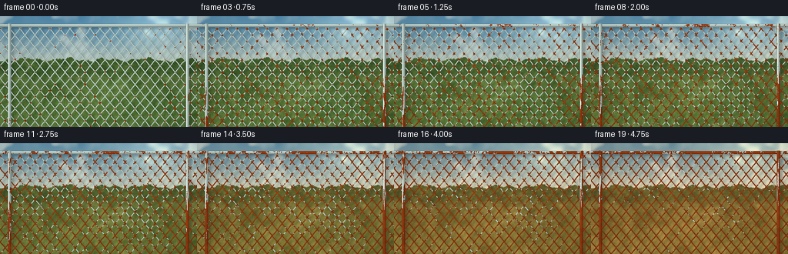
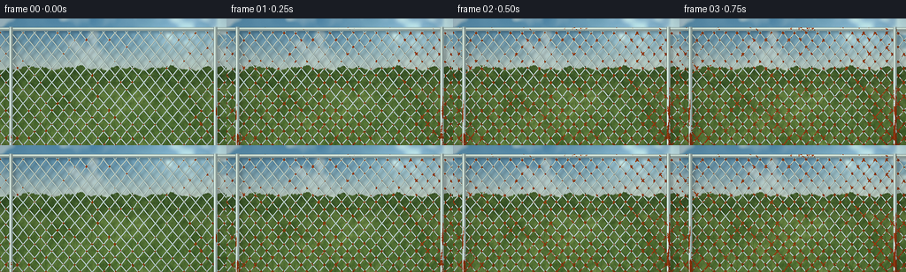
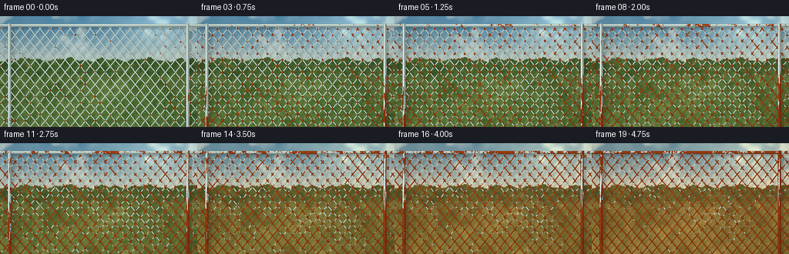
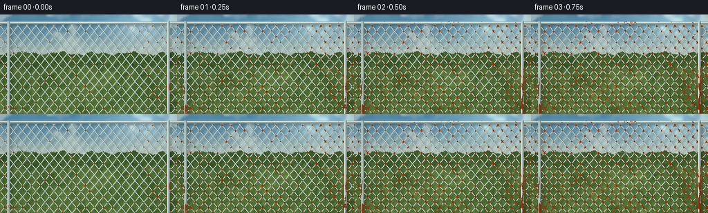

CODING AGENTS AS PIXEL WORLD MODELS
traex/DeepSeek-V4.1-Flash · material_0044
点击播放 · 原生 RGB 像素
逐轮保存的候选
回放视频、检查图与代码变化。
每份候选均可单独播放。实际图片检查记录在下方工具轨迹中。
候选 01播放与检查图
点击播放 · 原生 RGB 像素


展开代码变化
--- 上一保存版本
+++ 本次保存版本
@@ -0,0 +1,419 @@
+from pathlib import Path
+import math
+
+import numpy as np
+from PIL import Image, ImageDraw, ImageEnhance, ImageFilter
+from scipy.ndimage import gaussian_filter, shift
+
+import artifact_io
+
+
+OUT_W, OUT_H = 256, 144
+SCALE = 4
+W, H = OUT_W * SCALE, OUT_H * SCALE
+FRAMES = 20
+
+
+def smoothstep(edge0, edge1, x):
+ t = np.clip((x - edge0) / (edge1 - edge0 + 1e-8), 0.0, 1.0)
+ return t * t * (3.0 - 2.0 * t)
+
+
+def mix(a, b, t):
+ a = np.asarray(a, dtype=np.float32)
+ b = np.asarray(b, dtype=np.float32)
+ if np.ndim(t) == 0:
+ return a * (1.0 - float(t)) + b * float(t)
+ return a * (1.0 - t[..., None]) + b * t[..., None]
+
+
+def normalize(a):
+ a = np.asarray(a, dtype=np.float32)
+ lo, hi = float(a.min()), float(a.max())
+ return (a - lo) / (hi - lo + 1e-7)
+
+
+def fbm(rng, shape, octaves):
+ out = np.zeros(shape, dtype=np.float32)
+ total = 0.0
+ for sigma, amplitude in octaves:
+ layer = rng.normal(size=shape).astype(np.float32)
+ layer = gaussian_filter(layer, sigma=sigma, mode="reflect")
+ layer -= float(layer.mean())
+ layer /= float(layer.std() + 1e-7)
+ out += amplitude * layer
+ total += amplitude
+ return normalize(out / total)
+
+
+def line_profile(phase, cell, half_width, slope):
+ signed = ((phase + cell * 0.5) % cell) - cell * 0.5
+ distance = np.abs(signed) / math.sqrt(1.0 + slope * slope)
+ q = np.clip(distance / half_width, 0.0, 1.0)
+ alpha = 1.0 - smoothstep(half_width - 0.9, half_width + 0.9, distance)
+ profile = np.sqrt(np.maximum(0.0, 1.0 - q * q))
+ side = np.clip(signed / (half_width * 1.15), -1.0, 1.0)
+ light = (
+ 0.52
+ + 0.31 * profile
+ + 0.23 * np.exp(-((side + 0.47) / 0.27) ** 2) * profile
+ - 0.10 * np.exp(-((side - 0.67) / 0.34) ** 2)
+ )
+ spec = np.exp(-((side + 0.50) / 0.22) ** 2) * profile ** 2
+ return distance, alpha.astype(np.float32), np.clip(light, 0.25, 1.2), spec.astype(np.float32)
+
+
+def cylinder_profile(signed, half_width):
+ distance = np.abs(signed)
+ q = np.clip(distance / half_width, 0.0, 1.0)
+ alpha = 1.0 - smoothstep(half_width - 1.0, half_width + 1.0, distance)
+ profile = np.sqrt(np.maximum(0.0, 1.0 - q * q))
+ side = np.clip(signed / half_width, -1.0, 1.0)
+ light = (
+ 0.50
+ + 0.34 * profile
+ + 0.26 * np.exp(-((side + 0.48) / 0.26) ** 2) * profile
+ - 0.12 * np.exp(-((side - 0.65) / 0.34) ** 2)
+ )
+ spec = np.exp(-((side + 0.52) / 0.23) ** 2) * profile ** 2
+ return alpha.astype(np.float32), np.clip(light, 0.24, 1.2), spec.astype(np.float32)
+
+
+def make_blade_specs(rng):
+ specs = []
+ horizon = 286.0
+ for _ in range(4400):
+ depth = rng.random() ** 0.72
+ x = rng.uniform(-8.0, W + 8.0)
+ y = horizon + depth * (H - horizon + 7.0)
+ length = 3.5 + 31.0 * depth ** 1.25 * rng.uniform(0.55, 1.35)
+ lean = rng.normal(0.0, 2.4 + 3.8 * depth)
+ width = 1 if depth < 0.52 else int(rng.integers(1, 3))
+ alpha = int(rng.uniform(70, 155) + 45 * depth)
+ tone = float(rng.random())
+ specs.append((x, y, length, lean, width, min(alpha, 225), tone))
+
+ for _ in range(320):
+ x = rng.uniform(0.0, W)
+ y = rng.uniform(H * 0.69, H + 5.0)
+ length = rng.uniform(20.0, 62.0)
+ lean = rng.normal(0.0, 6.0)
+ specs.append((x, y, length, lean, int(rng.integers(2, 4)), int(rng.uniform(100, 185)), rng.random()))
+ return specs
+
+
+def draw_grass_layer(specs, autumn):
+ layer = Image.new("RGBA", (W, H), (0, 0, 0, 0))
+ draw = ImageDraw.Draw(layer)
+ for x, y, length, lean, width, alpha, tone in specs:
+ if autumn:
+ color = (
+ int(92 + 47 * tone),
+ int(90 + 31 * tone),
+ int(38 + 17 * tone),
+ int(alpha * 0.88),
+ )
+ else:
+ color = (
+ int(45 + 32 * tone),
+ int(83 + 39 * tone),
+ int(35 + 22 * tone),
+ alpha,
+ )
+ bend = lean * 0.35
+ draw.line(
+ [(x, y), (x + lean * 0.45, y - length * 0.58), (x + lean, y - length)],
+ fill=color,
+ width=width,
+ joint="curve",
+ )
+ if width >= 2:
+ draw.line(
+ [(x + 0.4, y - length * 0.2), (x + lean * 0.5 + bend, y - length * 0.68)],
+ fill=(min(255, color[0] + 11), min(255, color[1] + 17), color[2], max(25, alpha // 3)),
+ width=1,
+ )
+ return layer
+
+
+def make_background(autumn, specs, rng, shared):
+ yy, xx, xn, yn = shared["yy"], shared["xx"], shared["xn"], shared["yn"]
+ hedge_noise = shared["hedge_noise"]
+ cloud = shared["cloud"]
+ leaf_texture = shared["leaf_texture"]
+ ground_texture = shared["ground_texture"]
+ dapple = shared["dapple"]
+
+ if autumn:
+ sky_top = np.array([96, 137, 157], dtype=np.float32)
+ sky_low = np.array([226, 213, 180], dtype=np.float32)
+ hedge_dark = np.array([48, 62, 33], dtype=np.float32)
+ hedge_light = np.array([128, 119, 59], dtype=np.float32)
+ ground_dark = np.array([77, 76, 39], dtype=np.float32)
+ ground_light = np.array([143, 124, 65], dtype=np.float32)
+ sun_color = np.array([255, 217, 151], dtype=np.float32)
+ else:
+ sky_top = np.array([83, 136, 169], dtype=np.float32)
+ sky_low = np.array([220, 221, 196], dtype=np.float32)
+ hedge_dark = np.array([30, 62, 37], dtype=np.float32)
+ hedge_light = np.array([102, 137, 67], dtype=np.float32)
+ ground_dark = np.array([55, 85, 43], dtype=np.float32)
+ ground_light = np.array([106, 137, 72], dtype=np.float32)
+ sun_color = np.array([255, 237, 190], dtype=np.float32)
+
+ sky_t = smoothstep(0.0, 0.66, yn)
+ bg = mix(sky_top, sky_low, sky_t)
+
+ cloud_alpha = smoothstep(0.53, 0.73, cloud) * (1.0 - smoothstep(0.12, 0.54, yn)) * 0.46
+ bg = bg * (1.0 - cloud_alpha[..., None]) + np.array([236, 237, 226], dtype=np.float32) * cloud_alpha[..., None]
+
+ sun_glow = np.exp(-(((xn - 0.82) / 0.22) ** 2 + ((yn - 0.10) / 0.19) ** 2))
+ bg = bg + sun_color * (sun_glow * 0.20)[..., None]
+
+ hedge_top = 214.0 + 23.0 * hedge_noise + 7.0 * np.sin(xn * 31.0 + 0.4) + 5.0 * np.sin(xn * 79.0 + 1.7)
+ hedge_top_2d = np.broadcast_to(hedge_top, (H, W))
+ hedge_mask = smoothstep(hedge_top_2d - 2.0, hedge_top_2d + 2.0, yy)
+ hedge_mask *= 1.0 - smoothstep(310.0, 352.0, yy)
+
+ leaf_tone = np.clip(0.20 + 0.82 * leaf_texture + 0.20 * (hedge_noise - 0.5), 0.0, 1.0)
+ hedge_color = mix(hedge_dark, hedge_light, leaf_tone)
+ leaf_shadow = 0.76 + 0.24 * shared["leaf_shadow"]
+ hedge_color *= leaf_shadow[..., None]
+ bg = bg * (1.0 - hedge_mask[..., None]) + hedge_color * hedge_mask[..., None]
+
+ ground_mask = smoothstep(286.0, 329.0, yy)
+ ground_t = np.clip(0.30 + 0.55 * ground_texture + 0.28 * (yn - 0.50), 0.0, 1.0)
+ ground_color = mix(ground_dark, ground_light, ground_t)
+ ground_color *= (0.84 + 0.22 * shared["ground_shadow"])[..., None]
+ bg = bg * (1.0 - ground_mask[..., None]) + ground_color * ground_mask[..., None]
+
+ bg += sun_color * ((dapple - 0.43) * 0.15 * ground_mask)[..., None]
+ bg = np.clip(bg, 0.0, 255.0)
+
+ base = Image.fromarray(bg.astype(np.uint8), "RGB").convert("RGBA")
+ base.alpha_composite(draw_grass_layer(specs, autumn))
+
+ if autumn:
+ leaf_layer = Image.new("RGBA", (W, H), (0, 0, 0, 0))
+ ld = ImageDraw.Draw(leaf_layer)
+ for _ in range(110):
+ x = rng.uniform(0, W)
+ y = rng.uniform(H * 0.63, H - 3)
+ r = rng.uniform(0.7, 2.6)
+ color = (
+ int(rng.uniform(117, 188)),
+ int(rng.uniform(64, 113)),
+ int(rng.uniform(25, 55)),
+ int(rng.uniform(70, 150)),
+ )
+ ld.ellipse((x - r, y - r * 0.55, x + r, y + r * 0.55), fill=color)
+ base.alpha_composite(leaf_layer)
+
+ base = base.convert("RGB").filter(ImageFilter.GaussianBlur(1.15))
+ return np.asarray(base, dtype=np.float32)
+
+
+def make_rust_colors(rust_noise, rust_fine, light, spec):
+ rust_variation = np.clip(0.15 + 0.70 * rust_noise + 0.25 * rust_fine, 0.0, 1.0)
+ dark = np.array([72, 31, 17], dtype=np.float32)
+ orange = np.array([169, 72, 25], dtype=np.float32)
+ ochre = np.array([202, 111, 44], dtype=np.float32)
+ rust = mix(dark, orange, rust_variation)
+ ochre_mix = smoothstep(0.64, 0.92, rust_fine) * 0.58
+ rust = rust * (1.0 - ochre_mix[..., None]) + ochre * ochre_mix[..., None]
+ rust *= (0.58 + 0.52 * light)[..., None]
+ rust += np.array([55, 28, 11], dtype=np.float32) * (0.34 * spec)[..., None]
+ pits = smoothstep(0.72, 0.92, rust_fine) * 0.38
+ rust *= (1.0 - pits)[..., None]
+ return np.clip(rust, 0.0, 255.0)
+
+
+def make_metal_colors(light, spec):
+ zinc_dark = np.array([72, 83, 82], dtype=np.float32)
+ zinc_mid = np.array([151, 162, 158], dtype=np.float32)
+ zinc_light = np.array([213, 221, 211], dtype=np.float32)
+ low = np.clip(light * 1.28, 0.0, 1.0)
+ metal = mix(zinc_dark, zinc_mid, low)
+ top = smoothstep(0.74, 1.10, light)
+ metal = metal * (1.0 - top[..., None]) + zinc_light * top[..., None]
+ metal += np.array([42, 49, 46], dtype=np.float32) * (0.85 * spec)[..., None]
+ metal += np.array([8, 13, 13], dtype=np.float32)
+ return np.clip(metal, 0.0, 255.0)
+
+
+def main():
+ case_dir = Path(__file__).resolve().parent
+ rng = np.random.default_rng(18473)
+
+ yy, xx = np.mgrid[0:H, 0:W].astype(np.float32)
+ xn = xx / (W - 1)
+ yn = yy / (H - 1)
+
+ hedge_noise = fbm(rng, (H, W), [(3.0, 0.55), (13.0, 0.28), (41.0, 0.17)])
+ cloud = fbm(rng, (H, W), [(22.0, 0.42), (61.0, 0.34), (132.0, 0.24)])
+ leaf_texture = fbm(rng, (H, W), [(1.2, 0.22), (4.5, 0.33), (15.0, 0.28), (39.0, 0.17)])
+ ground_texture = fbm(rng, (H, W), [(2.0, 0.30), (8.0, 0.31), (28.0, 0.23), (75.0, 0.16)])
+ dapple = fbm(rng, (H, W), [(16.0, 0.55), (45.0, 0.28), (102.0, 0.17)])
+ leaf_shadow = normalize(gaussian_filter(rng.normal(size=(H, W)), sigma=(2.5, 5.5), mode="reflect"))
+ ground_shadow = normalize(gaussian_filter(rng.normal(size=(H, W)), sigma=(4.0, 16.0), mode="reflect"))
+ rust_noise = fbm(rng, (H, W), [(1.5, 0.30), (5.5, 0.32), (17.0, 0.23), (46.0, 0.15)])
+ rust_fine = fbm(rng, (H, W), [(0.8, 0.24), (2.6, 0.31), (7.0, 0.27), (20.0, 0.18)])
+ warp_noise = fbm(rng, (H, W), [(8.0, 0.55), (29.0, 0.28), (74.0, 0.17)])
+ streak = normalize(gaussian_filter(rng.normal(size=(H, W)), sigma=(21.0, 1.7), mode="reflect"))
+ grain = rng.normal(0.0, 1.0, size=(H, W)).astype(np.float32)
+ grain = gaussian_filter(grain, sigma=0.55)
+ grain /= float(grain.std() + 1e-7)
+
+ shared = {
+ "yy": yy,
+ "xx": xx,
+ "xn": xn,
+ "yn": yn,
+ "hedge_noise": hedge_noise,
+ "cloud": cloud,
+ "leaf_texture": leaf_texture,
+ "ground_texture": ground_texture,
+ "dapple": dapple,
+ "leaf_shadow": leaf_shadow,
+ "ground_shadow": ground_shadow,
+ }
+ blade_specs = make_blade_specs(rng)
+ bg_spring = make_background(False, blade_specs, np.random.default_rng(887), shared)
+ bg_autumn = make_background(True, blade_specs, np.random.default_rng(229), shared)
+
+ top_rail_y = 48.0
+ rail_half = 8.0
+ post_left = 49.0
+ post_right = W - 50.0
+ post_half = 8.5
+
+ rail_alpha, rail_light, rail_spec = cylinder_profile(yy - top_rail_y, rail_half)
+ rail_alpha *= smoothstep(2.0, 6.0, yy)
+
+ left_alpha, left_light, left_spec = cylinder_profile(xx - post_left, post_half)
+ right_alpha, right_light, right_spec = cylinder_profile(xx - post_right, post_half)
+ post_alpha = np.maximum(left_alpha, right_alpha)
+ post_light = np.where(left_alpha >= right_alpha, left_light, right_light)
+ post_spec = np.where(left_alpha >= right_alpha, left_spec, right_spec)
+ post_alpha *= smoothstep(34.0, 43.0, yy)
+
+ y_perspective = yy + 0.000040 * np.maximum(0.0, yy - 60.0) ** 2
+ warp = (warp_noise - 0.5) * 7.5
+ slope = 0.80
+ cell = 52.0
+ half_wire = 2.65
+ d1, a1, light1, spec1 = line_profile(xx + slope * y_perspective + warp, cell, half_wire, slope)
+ d2, a2, light2, spec2 = line_profile(xx - slope * y_perspective - warp * 0.72, cell, half_wire, -slope)
+
+ fence_active = smoothstep(55.0, 61.0, yy)
+ a1 *= fence_active
+ a2 *= fence_active
+ wire_alpha = np.maximum(a1, a2)
+ wire_light = (light1 * a1 + light2 * a2) / (a1 + a2 + 1e-6)
+ wire_spec = (spec1 * a1 + spec2 * a2) / (a1 + a2 + 1e-6)
+
+ joint = np.exp(-(d1 / (half_wire * 2.9)) ** 2) * np.exp(-(d2 / (half_wire * 2.9)) ** 2)
+ joint *= fence_active
+ lower = smoothstep(0.28, 1.0, yn)
+ attach = np.maximum(
+ np.exp(-((xx - post_left) / 40.0) ** 2),
+ np.exp(-((xx - post_right) / 40.0) ** 2),
+ )
+ wire_score = (
+ 0.62 * rust_noise
+ + 0.17 * rust_fine
+ + 0.12 * lower
+ + 0.24 * joint
+ + 0.08 * attach
+ + 0.035 * (warp_noise - 0.5)
+ )
+ post_score = 0.50 * streak + 0.27 * rust_noise + 0.18 * lower + 0.08 * rust_fine
+ rail_score = 0.54 * rust_noise + 0.18 * rust_fine + 0.17 * lower + 0.12 * streak
+
+ # The camera and fence remain fixed; only weathering and seasonal light move.
+ wire_quantiles = np.quantile(wire_score, np.linspace(0.05, 0.99, 80))
+ post_quantiles = np.quantile(post_score, np.linspace(0.05, 0.99, 80))
+ rail_quantiles = np.quantile(rail_score, np.linspace(0.05, 0.99, 80))
+
+ frames = []
+ for index in range(FRAMES):
+ t = index / (FRAMES - 1)
+ season = smoothstep(0.36, 0.98, t)
+ bg = bg_spring * (1.0 - season) + bg_autumn * season
+
+ warm = 0.055 + 0.085 * t
+ bg += np.array([255, 194, 118], dtype=np.float32) * (warm * (0.35 + 0.65 * dapple))[..., None]
+ bg *= np.array([1.0 + 0.035 * t, 1.0, 1.0 - 0.028 * t], dtype=np.float32)
+
+ fence_all = np.maximum(wire_alpha, np.maximum(post_alpha, rail_alpha))
+ cast = shift(fence_all, shift=(10.0, 14.0), order=1, mode="constant", cval=0.0)
+ cast = gaussian_filter(cast, sigma=5.2, mode="nearest")
+ bg *= (1.0 - 0.24 * cast)[..., None]
+
+ # Small light changes from year to year keep the still life from feeling frozen.
+ dapple_shift = shift(dapple, shift=(1.2 * math.sin(index * 0.7), 2.0 * math.sin(index * 0.47)), order=1)
+ bg += np.array([255, 204, 142], dtype=np.float32) * ((dapple_shift - 0.45) * 0.035)[..., None]
+ bg = np.clip(bg, 0.0, 255.0)
+
+ wire_q = 0.982 - 0.875 * (t ** 0.92)
+ post_q = 0.990 - 0.885 * (t ** 0.84)
+ rail_q = 0.986 - 0.870 * (t ** 0.90)
+ wire_thr = float(np.interp(wire_q, np.linspace(0.05, 0.99, 80), wire_quantiles))
+ post_thr = float(np.interp(post_q, np.linspace(0.05, 0.99, 80), post_quantiles))
+ rail_thr = float(np.interp(rail_q, np.linspace(0.05, 0.99, 80), rail_quantiles))
+
+ wire_rust = smoothstep(wire_thr - 0.012, wire_thr + 0.012, wire_score)
+ post_rust = smoothstep(post_thr - 0.012, post_thr + 0.012, post_score)
+ rail_rust = smoothstep(rail_thr - 0.012, rail_thr + 0.012, rail_score)
+
+ # Rust blooms at the intersections before the long spans change.
+ joint_bloom = np.clip(joint * (0.35 + 0.65 * t) * 0.55, 0.0, 0.78)
+ wire_rust = np.maximum(wire_rust, joint_bloom * smoothstep(0.04, 0.36, t))
+ wire_rust = np.clip(wire_rust, 0.0, 1.0)
+
+ metal_wire = make_metal_colors(wire_light, wire_spec)
+ rust_wire = make_rust_colors(rust_noise, rust_fine, wire_light, wire_spec)
+ wire_color = metal_wire * (1.0 - wire_rust[..., None]) + rust_wire * wire_rust[..., None]
+ wire_color *= (0.92 + 0.09 * wire_light)[..., None]
+
+ metal_post = make_metal_colors(post_light, post_spec)
+ rust_post = make_rust_colors(rust_noise * 0.55 + streak * 0.45, rust_fine, post_light, post_spec)
+ post_color = metal_post * (1.0 - post_rust[..., None]) + rust_post * post_rust[..., None]
+ post_color *= (0.90 + 0.12 * post_light)[..., None]
+
+ metal_rail = make_metal_colors(rail_light, rail_spec)
+ rust_rail = make_rust_colors(rust_noise * 0.75 + streak * 0.25, rust_fine, rail_light, rail_spec)
+ rail_color = metal_rail * (1.0 - rail_rust[..., None]) + rust_rail * rail_rust[..., None]
+
+ image = bg.copy()
+ image = image * (1.0 - wire_alpha[..., None]) + wire_color * wire_alpha[..., None]
+ image = image * (1.0 - rail_alpha[..., None]) + rail_color * rail_alpha[..., None]
+ image = image * (1.0 - post_alpha[..., None]) + post_color * post_alpha[..., None]
+
+ # A narrow cool rim on the upper-left edge of the wire adds metallic depth.
+ rim = np.clip(wire_spec - 0.58, 0.0, 1.0) * wire_alpha
+ image += np.array([35, 43, 42], dtype=np.float32) * (rim * 0.45)[..., None]
+
+ bloom_source = np.clip((image - 194.0) / 61.0, 0.0, 1.0)
+ bloom = gaussian_filter(bloom_source, sigma=(4.0, 4.0, 0.0), mode="nearest")
+ image += bloom * 23.0
+
+ vignette = 1.0 - 0.15 * ((xn - 0.5) ** 2 * 1.65 + (yn - 0.5) ** 2 * 1.20)
+ image *= vignette[..., None]
+ image += grain[..., None] * (1.05 + 0.30 * t)
+ image = np.clip(image, 0.0, 255.0).astype(np.uint8)
+
+ frame = Image.fromarray(image, "RGB").resize((OUT_W, OUT_H), Image.Resampling.LANCZOS)
+ frame = ImageEnhance.Contrast(frame).enhance(1.035)
+ frame = ImageEnhance.Color(frame).enhance(1.045)
+ frame = frame.filter(ImageFilter.UnsharpMask(radius=0.55, percent=62, threshold=2))
+ frames.append(np.asarray(frame, dtype=np.uint8))
+ print(f"rendered {index + 1:02d}/{FRAMES} rust={wire_q:.3f}")
+
+ frames = np.stack(frames, axis=0)
+ artifact_io.save(frames, case_dir)
+ print(f"saved {frames.shape} RGB frames to {case_dir}")
+
+
+if __name__ == "__main__":
+ main()
候选 02播放与检查图
点击播放 · 原生 RGB 像素


展开代码变化
--- 上一保存版本
+++ 本次保存版本
@@ -355,9 +355,9 @@
bg += np.array([255, 204, 142], dtype=np.float32) * ((dapple_shift - 0.45) * 0.035)[..., None]
bg = np.clip(bg, 0.0, 255.0)
- wire_q = 0.982 - 0.875 * (t ** 0.92)
- post_q = 0.990 - 0.885 * (t ** 0.84)
- rail_q = 0.986 - 0.870 * (t ** 0.90)
+ wire_q = 0.982 - 0.790 * (t ** 0.92)
+ post_q = 0.990 - 0.840 * (t ** 0.84)
+ rail_q = 0.986 - 0.820 * (t ** 0.90)
wire_thr = float(np.interp(wire_q, np.linspace(0.05, 0.99, 80), wire_quantiles))
post_thr = float(np.interp(post_q, np.linspace(0.05, 0.99, 80), post_quantiles))
rail_thr = float(np.interp(rail_q, np.linspace(0.05, 0.99, 80), rail_quantiles))
@@ -374,7 +374,10 @@
metal_wire = make_metal_colors(wire_light, wire_spec)
rust_wire = make_rust_colors(rust_noise, rust_fine, wire_light, wire_spec)
wire_color = metal_wire * (1.0 - wire_rust[..., None]) + rust_wire * wire_rust[..., None]
- wire_color *= (0.92 + 0.09 * wire_light)[..., None]
+ wire_color *= (0.94 + 0.11 * wire_light)[..., None]
+ wire_color += np.array([18, 23, 22], dtype=np.float32) * (
+ np.maximum(wire_spec - 0.45, 0.0) * wire_alpha
+ )[..., None]
metal_post = make_metal_colors(post_light, post_spec)
rust_post = make_rust_colors(rust_noise * 0.55 + streak * 0.45, rust_fine, post_light, post_spec)
可观测工具轨迹
实际执行的命令与返回图片。
命令 1exit 0
/bin/bash -c "pwd && rg --files -g 'prompt.txt' -g 'GENERATION_RULES.md' -g 'task_spec.json' -g '"'!**/.git/**'"'"
命令 2exit 0
/bin/bash -c 'ls -la'
命令 3exit 0
/bin/bash -c "find . -maxdepth 2 -type f -printf '%p %s bytes\\n' | sort"
命令 4exit 0
/bin/bash -c 'cat prompt.txt'
命令 5exit 0
/bin/bash -c 'cat GENERATION_RULES.md'
命令 6exit 0
/bin/bash -c 'cat task_spec.json'
命令 7exit 0
/bin/bash -c "sed -n '1,240p' artifact_io.py"
命令 8exit 0
/bin/bash -c "sed -n '1,240p' player_template.html"
命令 9exit 0
/bin/bash -c "python - <<'PY'
import importlib.util
for m in ['numpy','PIL','scipy','cv2','imageio','ffmpeg']:
print(m, bool(importlib.util.find_spec(m)))
PY"命令 10exit 0
/bin/bash -c 'which ffmpeg || true; which convert || true; python --version'
命令 11exit 0
/bin/bash -c 'python generate.py'
命令 12exit 0
/bin/bash -c "python - <<'PY'
from PIL import Image
import numpy as np
im=np.asarray(Image.open('inspection.png').convert('RGB'))
print('inspection',im.shape,'mean',im.mean((0,1)).round(1),'std',im.std().round(1))
for i in [0,5,10,15,19]:
a=np.asarray(Image.open(f'frames/{i:02d}.png').convert('RGB'))
print(i, 'mean',a.mean((0,1)).round(1), 'range',a.min(),a.max(), 'center',a[72,128])
PY"命令 13exit 0
/bin/bash -c "python - <<'PY'
from PIL import Image
# Build a 4x5 contact sheet at native scale with nearest upscale for visual inspection.
im=Image.new('RGB',(256*4, (144+18)*5),(24,27,32))
from PIL import ImageDraw
d=ImageDraw.Draw(im)
for i in range(20):
a=Image.open(f'frames/{i:02d}.png')
x=(i%4)*256; y=(i//4)*162
d.text((x+5,y+2),f'{i:02d} {i/4:.2f}s',fill='white')
im.paste(a,(x,y+18))
im.save('.tmp/contact.png')
print(im.size)
PY"命令 14exit 0
/bin/bash -c "python - <<'PY'
from PIL import Image, ImageOps
import numpy as np
chars=' .:-=+*#%@'
for f in [0,9,19]:
a=np.asarray(Image.open(f'frames/{f:02d}.png').convert('L').resize((80,36),Image.Resampling.BILINEAR),dtype=float)
print('\\nFRAME',f)
for row in a:
print(''.join(chars[min(9,int(v/256*10))] for v in row))
PY"命令 15exit 0
/bin/bash -c 'command -v chafa || command -v viu || command -v jp2 || command -v img2txt || true'
命令 16exit 0
/bin/bash -c "python - <<'PY'
from PIL import Image
im=Image.open('inspection.png')
im.resize((1536,495),Image.Resampling.NEAREST).save('.tmp/inspection_large.png')
print('saved')
PY"命令 17exit 0
/bin/bash -c "python - <<'PY'
from PIL import Image
import numpy as np
# Check the dominant scene geometry and color drift over the 20 frames.
a=np.stack([np.asarray(Image.open(f'frames/{i:02d}.png').convert('RGB'),dtype=np.float32) for i in range(20)])
for i in [0,4,9,14,19]:
f=a[i]
print(i,'top',f[:32].mean((0,1)).round(1),'hedge',f[50:75].mean((0,1)).round(1),'ground',f[100:].mean((0,1)).round(1))
d=np.abs(a[1:]-a[:-1]).mean((1,2,3))
print('successive mean abs deltas',d.round(2))
print('first/last global delta',np.abs(a[-1]-a[0]).mean().round(2))
PY"命令 18exit 0
/bin/bash -c "ls -la && find . -maxdepth 2 -type f -printf '%p %s bytes\\n' | sort"
命令 19exit 0
/bin/bash -c "python - <<'PY'
from PIL import Image
import numpy as np
for i in [0,5,10,15,19]:
a=np.asarray(Image.open(f'frames/{i:02d}.png').convert('RGB'),dtype=np.float32)
r,g,b=a[...,0],a[...,1],a[...,2]
orange=(r>g*1.18)&(g>b*1.18)&(r>65)&((r-b)>28)
print(i,'orange%',orange.mean()*100,'upper',orange[:80].mean()*100,'lower',orange[80:].mean()*100,'rustish mean',a[orange].mean(0) if orange.any() else None)
PY"命令 20exit 0
/bin/bash -c 'python generate.py'
命令 21exit 0
/bin/bash -c "python - <<'PY'
from PIL import Image
import numpy as np
for i in [0,5,10,15,19]:
a=np.asarray(Image.open(f'frames/{i:02d}.png').convert('RGB'),dtype=np.float32)
r,g,b=a[...,0],a[...,1],a[...,2]
orange=(r>g*1.18)&(g>b*1.18)&(r>65)&((r-b)>28)
print(i,'orange%',round(float(orange.mean()*100),2),'upper',round(float(orange[:80].mean()*100),2),'lower',round(float(orange[80:].mean()*100),2),'mean',a.mean((0,1)).round(1))
PY"命令 22exit 0
/bin/bash -c "python - <<'PY'
from pathlib import Path
from PIL import Image
import numpy as np, json
frames=np.stack([np.asarray(Image.open(f'frames/{i:02d}.png').convert('RGB')) for i in range(20)])
assert frames.shape==(20,144,256,3) and frames.dtype==np.uint8
assert len(list(Path('frames').glob('*.png')))==20
with np.load('pixels.npz') as z:
p=z['pixels']
assert p.shape==(144,256,20) and p.dtype==np.uint32
html=Path('index.html').read_text()
assert '__DATA__' not in html and 'window.__pixelReady=true' in html and 'pixels.npz' not in html
print('validated frames',frames.shape,'pixels',p.shape,'index.html',len(html),'bytes')
print('frame bytes',frames.nbytes,'unique colors frame0',len(np.unique(frames[0].reshape(-1,3),axis=0)))
PY"保存候选 2 份；完成命令 22 次；可验证图片返回 0 张。原始 API 响应与完整日志保留在本地。